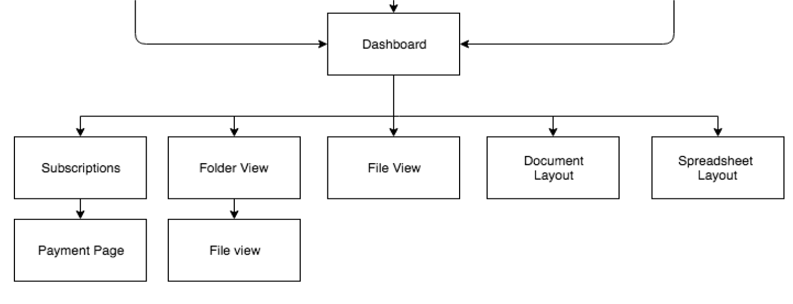
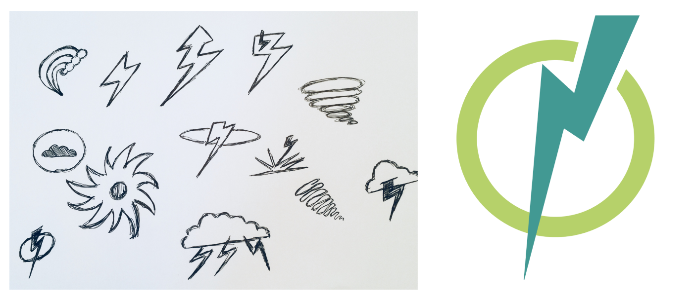

Summary
The cloud storage industry is on the rise with new web applications continually hitting the market. It’s expected to grow by 24% by the year 2022. I designed a prototype for a cloud storage system that’s dexterous, effective and aims to appeal to both the youth and business demographics.
Problem
Cloud and organization storage systems are a competitive market, yet many users are still frustrated with their experience. From security concerns to usability issues and affordability, users are still seeking an absolute application that meets all their needs.
Solution
Through research, branding, iteration, and usability testing, the Thunderhead cloud storage system has emerged as a solution offering users the ability to collaborate, connect, organize, save and create content. Moreover, it has solved the issue of multi-functionality that users desire.
ROLES
- UX Design
- Branding
- Information Architecture
- Visual Design
DELIVERABLES
- User Surveys
- User Personas
- User Stories
- User Flows
- Wireframes
- Style Guide
- High-fidelity mockups
- Prototypes
- User Testing
TOOLS
- Figma
- Photoshop
- Illustrator
- Balsamiq
- Invision
- Draw.io
RESEARCH
I created a user research survey that focused on the following elements:
- Usage
- Competitors
- Preferred Features
- Solving Problems
RESULTS
- 80% of respondents have used a cloud storage/organization app
- 89% of respondents are between the ages of 18-34
- Ease of use, accessibility, affordability, and integration are key preferences
The two main takeaways from this survey is that most users want accessibility and affordability as their key preferences, and 18 and 34 year olds are vastly different demographics.
VIEW REPORT >
USER PERSONAS
Based on the research, I created two user personas to represent the target demographics:
- 18 year old student
- 34 year old professional
Goals and Motivations
Mostly uses cloud storage for school related needs. Does not need to connect with other users as much as he needs a lot of accessible and low cost storage space.
Frustrations
Security concerns. Has to use multiple platforms for various aspects only offered on each one.

Goals and Motivations
Likes a cloud storage app that is integrated with other apps for streamlining the various parts of her working parent life. Especially likes to network/connect with other users, and create and share content.
Frustrations
Interfaces are not user friendly and intuitive enough for rapid mobile use.
SWOT ANALYSIS
I created a SWOT analysis on the three most widely recognized cloud storage apps - Google Drive, Dropbox and iCloud. The results highlighted the need for cross platform integration, low costs and user-friendly interfaces.

The results highlighted the need for cross platform integration, low costs and user-friendly interfaces.
VIEW REPORT >
USER STORIES
In an effort to create a minimum viable product, I created user stories to emphasize the essential capabilities needed for the app to function.
VIEW USER STORIES >
USER FLOWS

I created user flows to help visualize the actions needed to complete a task. In the end, I had to go back and re-approach the user flows as it became clear that certain actions could be streamlined.
VIEW USER FLOWS >
SITEMAP
I created a sitemap to detail the overall naviation of the app, and help clarify hierarchy and content.
VIEW SITEMAP >
WIREFRAMES
The next step was testing the navigation process through wireframes. Wireframes help determine action and protocol without the distraction of graphics or marketing content. I conducted in-person and remote usability tests on these wireframes. Each usability test highlighted another missed opportunity or inaccurate user flow. It took several attempts to find the most efficient sequence.
VIEW WIREFRAMES>
BRAND NAME

Through the use of word lists and mind-maps, the natural progression for naming a cloud storage system is to arrive at weather terminology. This landed me on a cloud type called Thunderhead which resonated due to its determination and youth appeal.
LOGO
I designed several variations of a logo which were preference tested by a random sample of participants.
Aligning with a thunder theme, the popular choice was the thunderbolt enclosed by a circle.
COLOR PALETTE
I constructed a combination of complementary and analogous colors to help create a cohesive design feel across the entire application. The vibrant colors (#069CDC #F2994A) were chosen for call-to-action buttons, while the more subdued tones (#82999F #429993) are utilized for backgrounds and icons.
TYPOGRAPHY

Terminal Dosis, Actor, Roboto and PT Sans were fonts chosen for their smooth accessibility and modern appeal.
SKETCHING

To fully realize the design, I started with pen and paper. This process allowed me to quickly iterate several different layout options and capitalize on the ones that thrived after user testing.
VIEW SKETCHES>
HI-FIDELITY PROTOTYPE

Based on feedback from an assessment, I further developed the high-fidelity prototype with changes that included stronger icons, more color variation, and adjusting for alignment and contrast issues.
USABILITY TESTING
Lastly, another round of usability testing was done to hone the application to its peak achievement. The final version included these changes:
- The logo size increased
- Text sizes increased throughout the app
- More efficient user flow
CONCLUSION
According to user research, a cloud storage system needs to be all things to all people. By combining research, branding, design iterations, prototypes and usability testings, I was able to deliver an application that enables users to share, create and collaborate on content.
Along the way, I also learned how our best intentions for user flows will always need more flushing out than expected. User flow will always benefit by more user testing. If I could further design Thunderhead, I would continue to explore the color pallette options.